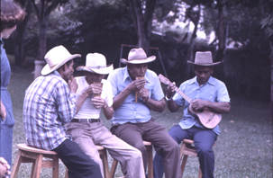
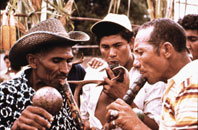
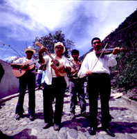
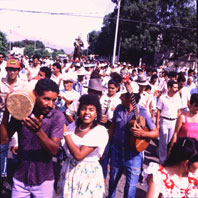
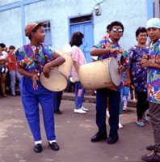
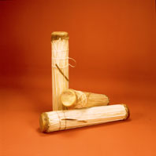
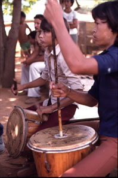
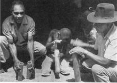
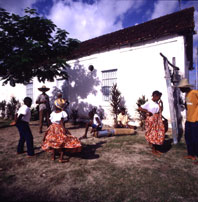
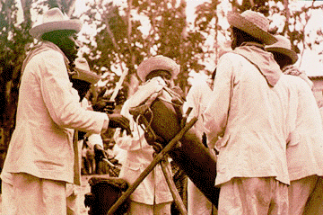

IV. Principales
Conjuntos Instrumentales
| Conjuntos de Viento | Conjuntos de Cuerda | Conjuntos de Percusión Afrovenezolana | Conjuntos Recientes |
| Conjuntos de Viento |
Carrizos de San José de Guaribe
• Región de los Llanos
• Se ejecutan en bailes festivos, como en Carnaval, Navidad
y
en el día del Santo patrón.

3 Manos de Carrizos: 1 Mano Mayor
1
Mano Menor
1
Prima
1 Cuatro
1 Par de Maracas
1 Tambora mediana
1 Charrasca (de madera) (opcional, nueva incorporación)
Las Turas
• Región Centro-Occidental
• Baile de Las Turas, para el día de la Virgen de las
Mercedes

4 Flautas Turas: 2 Turas grandes, macho y hembra
2
Turas chicas, macho y hembra
2 Cachos de Venado
1 Cuatro
1 Par de Maracas
1 Tambora mediana
Mare-Mare con Carrizos
• Región Nor-Oriental
• Mare-Mare en comparsas de Carnaval, Parrandas de Carrizos
en
Navidad
3 Manos de Carrizos: 1 Mare
Macho
(Verékushi apoto)
(o
Mare-Mare)
1
Mare Hembra (Verékushi Ki'vichano)
1
Mare Prima (Verékushi mie)
1 Cuatro
1 Guitarra
1 Tambora mediana
1 Par de Maracas
Voz
| Conjuntos de Cuerda |
Carángano/Marimba
• Región Central, Llanos, Nor-Oriental
• Parranda de Carángano, Baile del Mono, La Llora,
Navidad,
Joropos
1 Carángano/Marimba
1 Vejiga de res inflada seca o Tapara abierta o Coco seco abierto,
con semillas sueltas adentro
1 Cuatro
1 Par de Maracas
1 Voz Solista (o más)
Coro
Conjunto Andino
• Región de Los Andes
• Aguinaldos, bambucos, valses, pasajes, merengues y golpes
para
bailes festivos,
para la Paradura del Niño y Danceros de la
Candelaria,
Parranda de Carángano.

Combinaciones de los siguientes instrumentos:
1 Violín
1 Tiple
1 Guitarra
1 Cuatro
1 Carángano
1 Par de Maracas
1 Bandola Andina o Bandurria
1 Voz solista
Coro
Golpe Larense
• Región Centro-Occidental
• Golpes larenses. Décimas, golpes, salves a San Antonio.
Suite del Tamunangue, Salves y Saragozas en Navidad.
Salves, romances y estribillos para Velorios de Cruz
de
Mayo.

1 Cuatro Monterol (llamado también Requinto)
1 Medio Cinco
1 Seis (llamado también Cinco)
1 Cuatro
1 Guitarra (opcional)
1 Pandero (llamado también Furro de mano)
1 Tambora de Golpe
1 Tambor Tamunango (de uso específico en el Tamunangue)
1 Par de Maracas
1 Voces solistas (generalmente a dúo armónico)
Coro
Joropo Central
• Región Central
• Pasajes Aragüeños, Revueltas y Golpes Tuyeros para
bailes festivos.
1 Arpa Central o Bandola Central o Bandola Cordillerana o
Guitarra
Tuyera
(todos con cuerdas de acero, excepto los bordones del
Arpa y la Guitarra)
1 Par de Maracas
1 Voz solista o Buche (usualmente el mismo maraquero)
Joropo Llanero
• Región de los Llanos
• Corridos, seis, seis por derecho, seis numerao, pasajes,
golpes,
valses y canciones para bailes o joropos festivos.
Tonos de Velorios de Cruz de Mayo (con Bandola).
1 Arpa Llanera o Bandola Llanera (todos con cuerdas de tripa o
nylon)
1 Cuatro
1 Par de Maracas
1 Bajo acústico o eléctrico (opcional)
1 Voz solista (usualmente el mismo maraquero)
Joropo Oriental
• Región Nor-Oriental
• Galerones, malagueñas, fulías en Velorios de
Cruz de Mayo. Canciones, polos, décimas, gaitas, jotas,
malagueñas,
joropos y golpes con estribillo, golpes de “arpa”para
bailes festivos. Puntos, gaitas, aguinaldos y comparsas en
Navidad.
1 Bandolín o Cuereta (acordeón) o Bandola Oriental
1 Guitarra
1 Cuatro
1 Par de Maracas
1 Charrasca (de madera)
1 Marímbola
1 Voz solista
Coro (en las Comparsas)
| Conjuntos de Percusión Afrovenezolana |
Aguinaldos y Parrandas
• En casi todo el país
• Fiestas de Navidad, Aguinaldos de Reyes, Aguinaldos del
Niño,
Cantos de Parranda
Combinaciones de los siguientes instrumentos:
1 Tambora
1 Cuatro
1 Guitarra
1 Furruco
1 Par de Maracas
1 Güiro o Charrasca (de metal o madera)
1 Chapero
1 Voz Solista (o más)
Coro
Calypso de El Callao
• Región de Guayana
• Comparsas de Carnaval, fiestas y bailes de Carnaval

3 Tambores Bum-Bac
1 Cuatro (amplificado)
1 Rayo
1 Triángulo o Campana Agogo pequeña (opcional)
1 Campana de tapa de bombona de gas o Cencerro
1 Bajo eléctrico (opcional)
1 Voz solista (o más)
Coro
Culo ’e Puya (o Tambor Redondo)
• Región Central
• Fiestas de San Juan

3 Tambores Redondos: 1 Pujao
1
Cruzao
1
Prima
1 Maraca (o duplicados)
1 Voz solista (o más)
Coro
Fulía
• Región Central
• Fulías de Cruz de Mayo y Corpus Christi.
3 Tamboritas de Fulía: 1 Pujao
1
Cruzao
1
Prima
1 Par de Maracas
1 Charrasca o Plato de Peltre
1 Cuatro
1 Voz solista (o más)
Coro
Gaita de Furro
• Región Zuliana
• Fiestas de Navidad

2 Tamboras
1 Cuatro
1 Güiro (de metal)
1 Furruco
1 Voz Solista (o más)
Coro
Gaita Perijanera
• Región Zuliana
• Fiestas de Navidad
1 Tambora
1 Cuatro
1 Par de Maracas
1 Voz Solista (o más)
Coro
Gaita de Tambora
• Región Zuliana
• Fiestas de Navidad
1 Medio Golpe de Chimbangueles
1 Tamborito (redoblante de campo)
1 Maraca (o duplicados)
1 Voz Solista (o más)
Coro
Quichimba
• Región Central
• Fiestas de San Juan
3 Tambores: 1 Tambor Mina (en el suelo)
1
Tambor Curbata (en el suelo)
1
Pipa
2 Pares de Laures, tocando sobre el cuerpo de los tambores (o
más)
1 Maraca (o duplicados)
1 Guarura (opcional)
1 Voz Solista (o más)
Coro
Quitiplás
• Región Central
• Instrumentos de aprendizaje para tocar tambor redondo y
diversión
infantil. Todo el año.

5 Tubos de Bambú: 1 Pujao o Macho
(o duplicados) 1 Prima
1
Cruzao
2
Quitiplás
1 Maraca (o duplicados)
1 Voz solista (o más) (opcional)
Coro (opcional)
Tambor (cumaco) de Caraballeda
• Región Central
• Fiestas de San Juan y San Pedro
5 Tambores Cumaco: 2 Campanas
1
Burro Negro
2
Pujos
1
Tambor Pipa (de barril)
2 Pares de Laures, tocados sobre el cuerpo de los Cumacos
Tambores Chimbangueles
• Región Zuliana
• Fiestas de San Benito
7 Tambores Chimbangueles:
Hembras: 1 Primera Requinta
1
Segunda Requinta
1
Requinta Media
Machos: 1 Medio Golpe
1
Respondón
1
Cantante
1
Mayor o Arriero
1 Flauta (o más)
1 Maraca (o duplicados)
1 Voz Solista (o más)
Coro
Campanas de la Iglesia
Tambor (San Juan) de Guatire
• Región Central
• Fiestas de San Juan
3 Tambores
2 Pares de Laures, tocando sobre el cuerpo de los tambores (o
más)
2 Maracas (opcional)
1 Voz Solista (o más)
Coro
Tambor (cumaco) de La Sabana
• Región Central
• Fiestas de San Juan y San Pedro
3 Tambores Cumaco (tocado con las manos)
1 Curbata (tocada con varas largas)
2 Pares de Laures, tocando sobre
el cuerpo del Cumaco
2 Guaruras
1 Voz Solista (o más)
Coro
Tambor Largo (o Guarire)
• Región Zuliana
• Fiestas de Navidad
1 Tambó
Largo
1 Par de Capopos ( o Laures), tocados sobre la prolongación
del tambor
1 Cuatro
1 Maraca (o duplicados)
1 Voz Solista (o más)
Tambor Mina (o Tambor Grande)
• Región Central
• Fiestas de San Juan
1 Tambor Mina
(tocado en la Boca)
2 Pares de Laures tocando sobre el cuerpo del Mina (o más)
1 Tambor Curbata
1 Maraca (o duplicados)
1 Guarura (o duplicados)
1 Voz solista (o más)
Coro
Tambores (San Juan) de Naiguatá
• Región Central
• Fiestas de San Juan
3-8 Tambores Pipas
2 Cumacos en el piso para los Laures, tocando sobre el cuerpo de
los
tambores
1 Voz Solista (o más)
Coro
Tambor (cumaco) de Ocumare (de la Costa)
• Región Central
• Fiestas de San Juan y San Pedro
2 Tambores Cumaco (1 ejecutante)
1 Par de Laures, tocados sobre el cuerpo del Cumaco
1 Maraca
1 Voz Solista (o más)
Coro
Tambor (cumaco) de San Millán
• Región Central
• Fiestas de San Juan y San Pedro
1 Tambor Cumaco o Culo Largo
1 Tambor primo (el mismo ejecutante del Cumaco)
2 Tamboras: 1 Redondo
1
Clarín
1 Plato de Peltre
1 Maraca (o duplicados)
1 Rayo (o duplicados)
1 Voz Solista (o más) también llamado Apuntador
Coro
Tambor Veleño
• Región Centro-Occidental
• Fiestas de Navidad
2 Tambores Veleños: 1 Campana
1
Bajo
1 Cuatro
2 Güiros de Metal, grande y pequeño (cilindro)
1 Rayo
1 Furruco
1 Voz Solista (o más)
Coro
| Conjuntos Recientes |
Conjunto de Rock, Pop o “Moderno”
• Áreas Urbanas
• Para presentaciones de Rock, Reggae, Rap, Jazz, Blues, en
conciertos,
bailes o fiestas.
Combinaciones de los siguientes instrumentos:
1 Guitarra Eléctrica solista
1 Guitarra Eléctrica acompañante
1 Piano o Teclado MIDI u otros teclados
1 Bajo eléctrico o acústico amplificado
1 Instrumento solista (Saxofón, Trompeta, Flauta)
1 Sección de Vientos metales en cualquier combinación
1 Par de Tumbadoras, más percusión pequeña variada
1 Batería de percusión
1 Voz Solista (o más)
Coro
Amplificación con Ingeniero de Sonido
Conjunto de Salsa
• Áreas Urbanas
• Para presentaciones en conciertos, bailes o fiestas.
Combinaciones de los siguientes instrumentos:
1 Tres (amplificado)
1 Piano o Teclado MIDI o Vibráfono
1 Violín
1 Guitarra eléctrica
1 Bajo eléctrico o acústico amplificado
1 Sección de Vientos Metales: (con variedad en su
duplicación)
Saxofones
Trompetas
Trombones
Flauta traversa
1 Par de Congas (Conga + Tumbadora) (o más)
1 Par de Bongós + 1 Cencerro en mano
1 Par de Timbaletas (+ Cencerro + Platillo en parales)
1 Par de Maracas de Cuero (opcional)
1 Güiro de madera (opcional)
1 Voz Solista (o más)
Coro
Amplificación con Ingeniero de Sonido
Estudiantina
• Áreas Urbanas, centros académicos
• Conciertos y presentaciones formales de repertorio
tradicional
venezolano:
Vals, Pasajes, Merengues, Paso-dobles, Onda Nueva,
Joropo
Combinaciones de los siguientes instrumentos:
3 Mandolinas Primeras y Segundas
3 Mandolas
1 Cuatro
3 Guitarras
1 Tiple o Tres (opcional)
1 Contrabajo
1 Percusión pequeña (Maracas, Redoblante, Güiro)
1 Voz Solista (opcional)
1 Director
Gaita Zuliana
• Áreas Urbanas, especialmente en colegios
• Fiestas de Navidad, discotecas, festivales y competencias
de
gaitas, amanecer gaitero
2 Tamboras
1 Cuatro
1 Furruco
1 Charrasca (de metal)
1 Par de Maracas (opcional)
1 Teclado MIDI (opcional)
1 Guitarra eléctrica
1 Instrumento de viento solista (o más) (opcional)
1 Bajo eléctrico
1 Voz Solista (o más)
Coro
Miniteca
• Áreas Urbanas
• Para presentaciones en bailes, fiestas, guerras de
minitecas.
1 Equipo de reproducción (disco compacto, cassette, plato)
1 Arsenal de discos y cintas de todos los estilos
1 Equipo de luces y efectos audiovisuales
Amplificación de Sonido
Orquesta Típica
• Áreas Urbanas, centros académicos
• Conciertos y presentaciones formales del repertorio
tradicional
venezolano (ver Estudiantina)
Duplicación de los siguientes instrumentos:
Violines Primeros y Segundos
Violas
Violoncellos
1 Contrabajo
Mandolinas Primeras y Segundas
1 Cuatro
Guitarras
1 Percusión pequeña (Maracas, Redoblante, Güiro)
1 Flauta Traversa
1 Oboe
1 Clarinete
1 Director
Ensambles o grupos híbridos
• Áreas Urbanas, centros académicos
• Conciertos y presentaciones formales del repertorio
tradicional
venezolano con alto virtuosismo